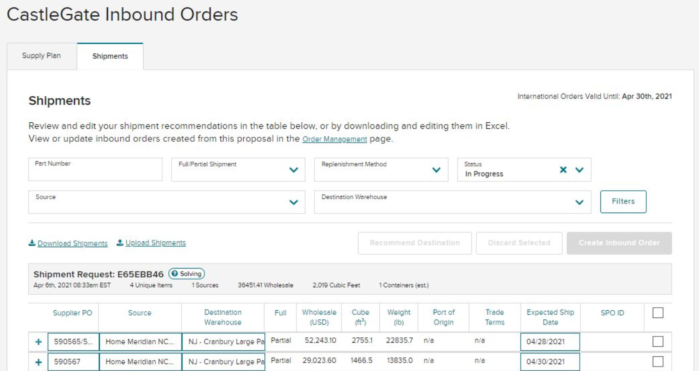
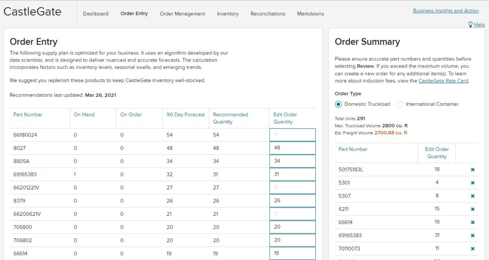
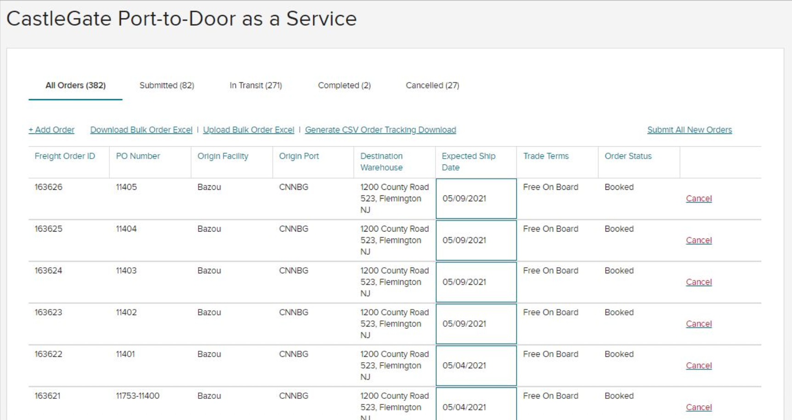
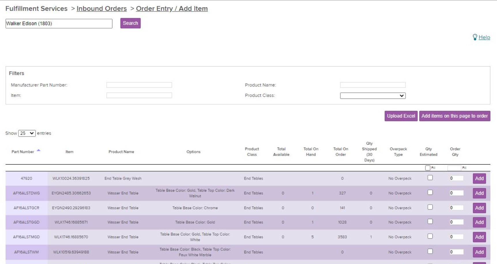
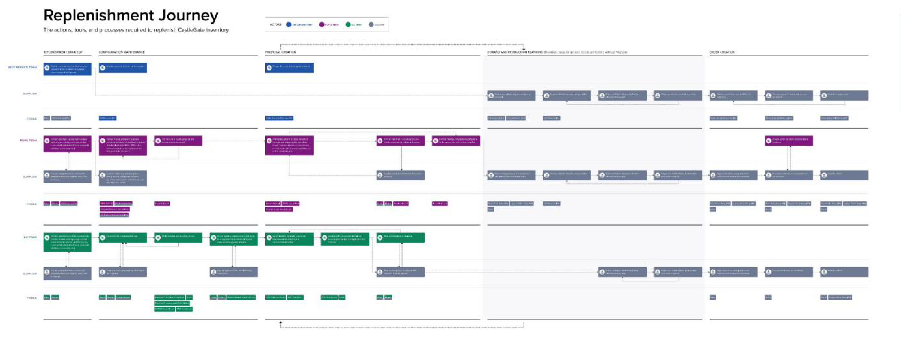

Product Story
Replacing four supplier tools with one,
Wayfair's Partner Home is the portal where thousands of suppliers manage their business with the company. One critical workflow is creating inbound orders to ship products to Wayfair's CastleGate warehouses, positioned closer to customers for faster delivery.
Over time, this workflow had splintered. Four separate teams had built four separate order entry tools: one for large managed suppliers, one for self-service, one for stocking orders, and one for port-to-door shipping. Same core task, four different interfaces, each with its own quirks and limitations.




Suppliers were missing replenishment opportunities because the tools weren't fully self-service, couldn't handle account nuances across regions, and were spread across multiple screens. Internally, Wayfair was maintaining four codebases for what was essentially one workflow.
The strategy: create a single, unified experience that worked for every supplier type, every service level, and every geography. Flexible enough for power users who think in spreadsheets, and guided enough for smaller suppliers seeing this for the first time.

Mapping the journey across supplier segments revealed the needs were overwhelmingly similar.
I joined Wayfair to work with a Berlin team but was quickly reassigned to this project in Boston. The previous designer had left abruptly. There was no overlap, no handoff, and the project was about 25% complete. The PM seat was empty too: first filled by the Head of Product, then the Engineering Manager doubling in both roles, before a dedicated PM finally joined months later.
The dev team was demoralized. Remote, post-COVID, dealing with leadership churn and a tool migration from Sketch to Figma happening simultaneously. I needed to earn trust before I could push the design forward.
My first move wasn't a design review or a stakeholder interview. It was the validation building blocks: a comprehensive document mapping every form field, every error state, every edge case into structured components the engineering team could assemble like puzzle pieces. I asked no questions. I just delivered the file.
It worked. The team saw someone willing to do extra work to make their job easier. That file became the foundation I built trust on.

Every field, every error state, every edge case. One structured file for the team to build from.
The experience split into two paths based on supplier proficiency.
Experienced suppliers got what they already knew: data-rich tables with inline editing, bulk actions, search and filters. These users understood the replenishment process, knew the required details and timelines, and were comfortable working with spreadsheet-like interfaces.
Newer or less technical suppliers got a guided flow: a step-by-step wizard using expanded radio buttons with titles and subtitles explaining each choice. Not just "Truckload" but "Move products from your warehouses to Wayfair's facilities."

Two paths to the same destination. Power users get tables, newcomers get step-by-step guidance.
One principle I held throughout: guide users through what they can't select, not just what they can. Disabled options always had hover explanations. If a supplier had no active proposals, they'd see exactly why the catalog option was greyed out and what to do about it.

Disabled states should explain themselves. A greyed-out option without context is just a dead end.
When we introduced a new way for suppliers to add products through the UI (instead of uploading Excel files), I ran research across three waves. We reached out to 123 suppliers and conducted 11 interviews spanning EU and North America, across self-service, managed, and forwarding supplier types.
Every participant completed the task without help. Average time was about four minutes.
But the secondary finding was more revealing. Every single user tried the table's search box first, assuming it would search their full product catalog. The actual "Manage Products" button took much longer to find, with some users spending up to 70% of their session time looking for it.
I escalated the issue to the design system team and explored alternative placements. We agreed the new design system was still rolling out across Partner Home. Once the button pattern became consistent across all screens, familiarity would solve the problem. We kept the design. Sometimes the right call is patience, not a patch.

All users completed the task. But all users also stumbled on the same thing first.
The rollout covered five supplier segments across the US, Canada, and Europe over the course of the project. Each phase was monitored to ensure order volume held steady and reversion stayed low. By the end, all legacy tools were retired.
If I could change one thing, I'd fight harder for time to follow through. The migration went well, but I was pulled to the next project before I could sit with the data and push the experience further.
Cross-team alignment was the other miss. I saw the fragmentation across Wayfair's 50+ person design org from day one. I made small attempts to bridge it, but never had the runway to drive real change. Both taught me that the work after launch matters as much as the work before it.